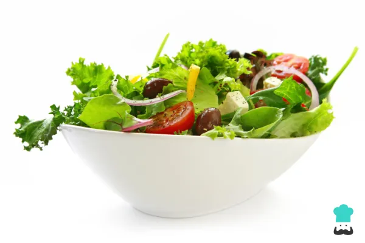

Green Salad

Description
This green salad is good for a side dish or a meal on its own.
I make it often for my family and they always enjoy it.
Ingredients
- 1/2 Cup chopped onion
- 1/2 Cup chopped green bell pepper
- 2 Packages mixed salad greens
- 1 Tomato, chopped
- 3 Dashes garlic powder
- 2 Pinches salt and ground black pepper to taste
- 3 Tablespoons balsamic vinaigrette salad dressing
Steps
- Gather the ingredients
- lace onion and bell pepper in a microwave-safe bowl; heat in microwave on high until soft, about 1 to 2 minutes.
Set aside to cool.
- Combine onion, bell pepper, salad greens, deli meat, and tomato in a large salad bowl. Sprinkle with onion powder,
garlic powder, salt, and black pepper; toss well to mix.
- Pour on salad dressing; toss well and serve.
- Pour on salad dressing; toss well and serve.